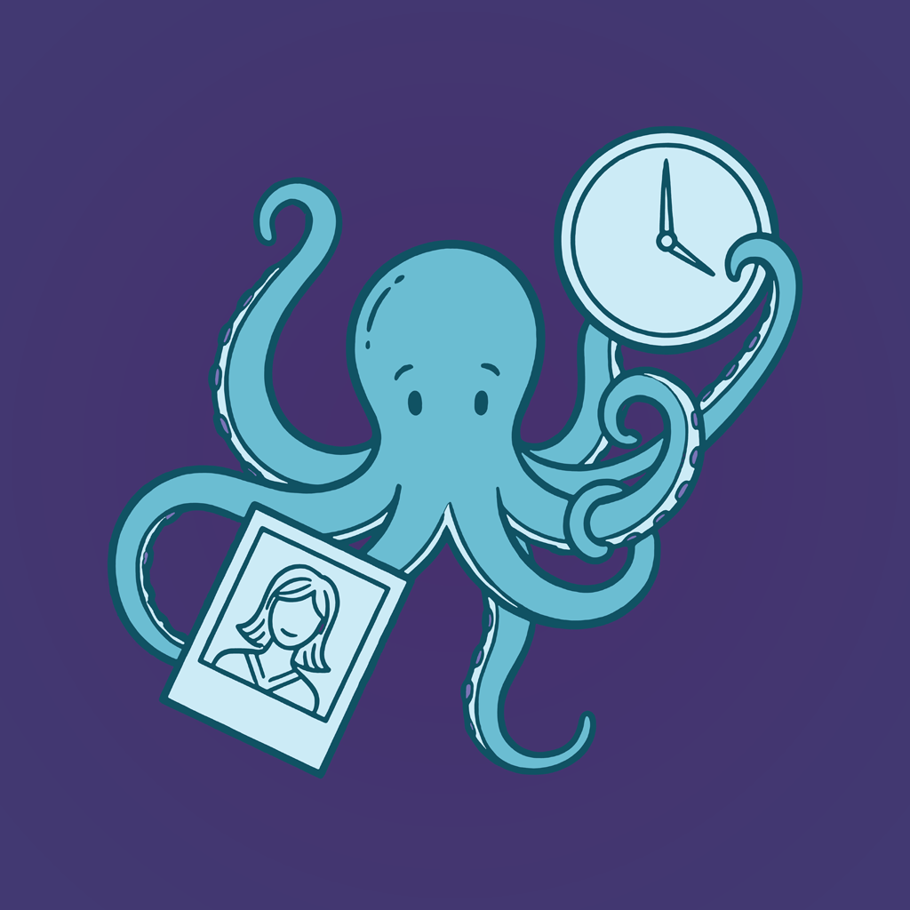
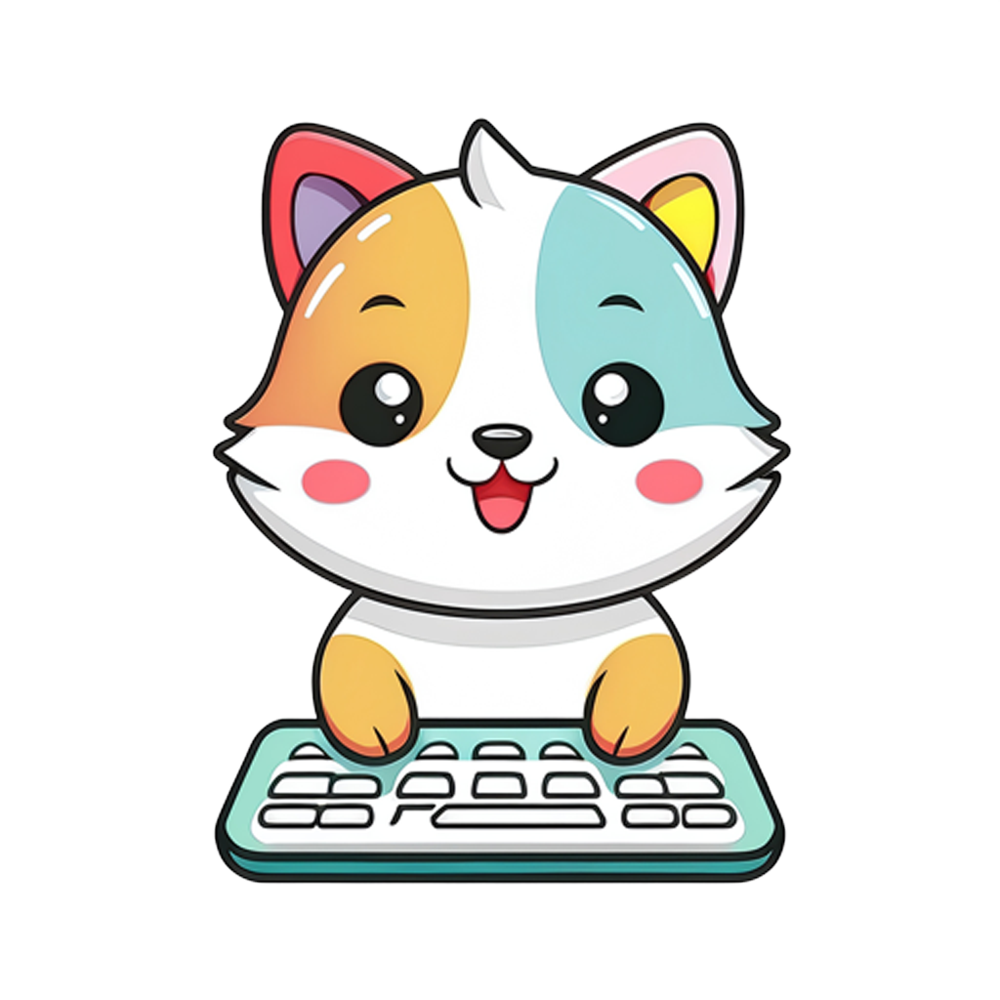
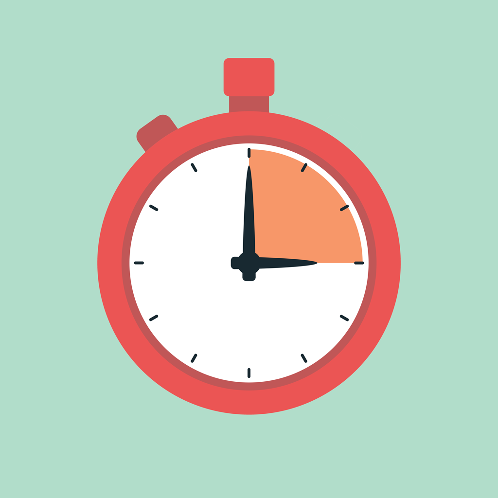
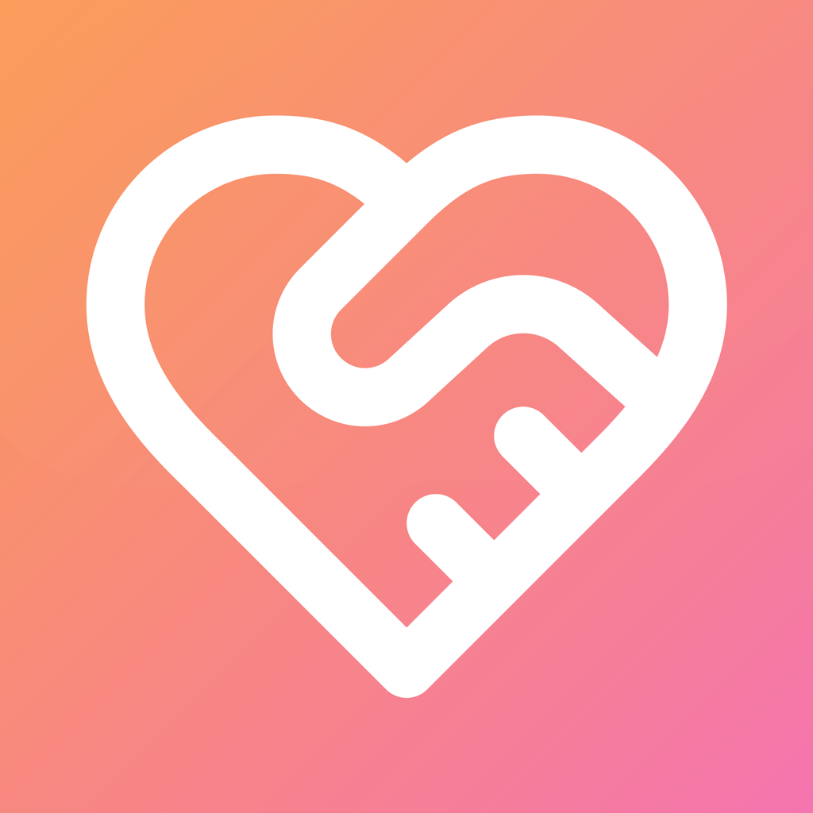

About
I like building things, digital and otherwise.
Professionally, I work as a product manager in software development with a focus on user empathy and usability, and for personal projects I explore creative projects ranging from music production to DIY maker projects.
Personal Projects
In my spare time, I'll work on underserved needs that pique my interest. See a selection of my projects below for an idea of what interests me and how much time I'm willing to sink into it.
An iOS music player built for audiophiles, featuring bit-perfect playback up to 192kHz/24-bit, gapless transitions, external DAC optimization, cloud integration with Dropbox, and Jellyfin and Plex media server support. Designed to preserve audio quality without unnecessary processing.

Whazzat family project • 2026 - ∞A photo and video library for iPhone, iPad, Mac, and the web. Whazzat streams media directly from Dropbox without a full local sync, with tools for organizing, searching, sharing, and rediscovering memories. Premium AI features include visual search, album suggestions, and on-device people grouping.
An open-source browser-based randomizer and parameter editor for the Red Panda Particle 2 granular delay pedal. It connects directly over Web MIDI to generate and mutate sounds, manage presets, and create portable backups, all in one dependency-free HTML file.

Keyboard Viewer typing helper • 2025A native macOS app that visualizes keyboard layouts in real-time as you type. Perfect for learning alternate keymaps, exploring modifier combinations, and understanding complex keyboard layers on split mechanical keyboards.

EMDR Timer utility app • 2025A specialized therapy app for conducting EMDR sessions, providing reliable timing with audio and haptic notifications. Cross-platform on iOS and Android, allowing therapists to focus on client care without managing time manually. Has proven to be a handy general purpose timer as well.

PrayerSwap side project • 2025A progressive web app for sharing and synchronizing prayer requests with offline-first functionality. Allows users to submit prayers even without internet connectivity, automatically syncing when back online.
An anonymous mobile platform fostering community understanding through daily questions on meaningful topics. Uses AI to synthesize responses and generate summaries highlighting key arguments from multiple perspectives.